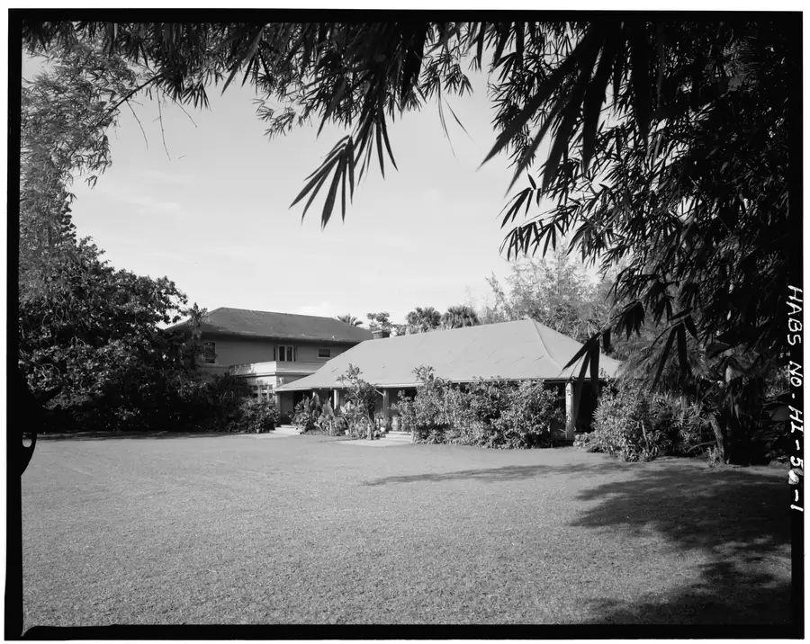
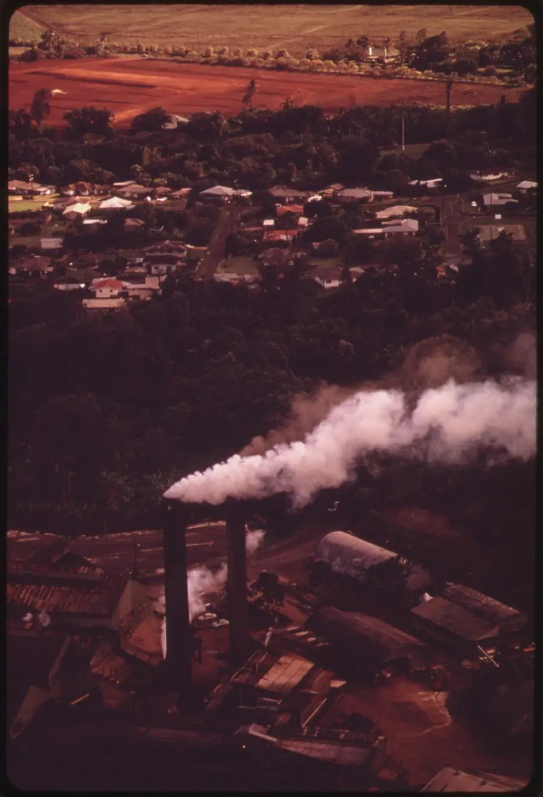

All the grounds we do
We touch your ground at Līhuʻe
Līhuʻe grew up around sugar. Lihue Plantation began growing cane here in 1849, and George N. Wilcox acquired nearby Grove Farm in 1864; his family's homestead still stands as a museum. German immigrants who came to work for the plantation founded a Lutheran congregation in the early 1880s. During the twentieth century Līhuʻe became the seat of Kauaʻi County and the island's center for business and government, with Nāwiliwili Harbor at its edge.
Old Līhuʻe
Historic photographs of Līhuʻe, from public collections.




Work to do in Līhuʻe?
History sources: www.britannica.com · sah-archipedia.org · www.loc.gov · grovefarm.org · lihuelutheranchurch.com · kauaihistoricalsociety.org